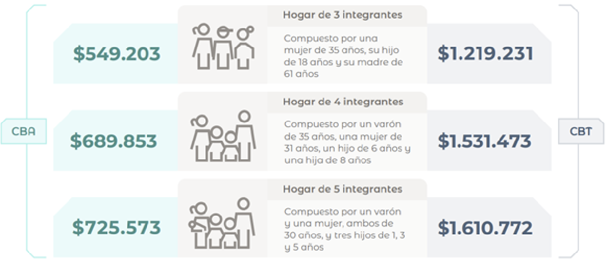
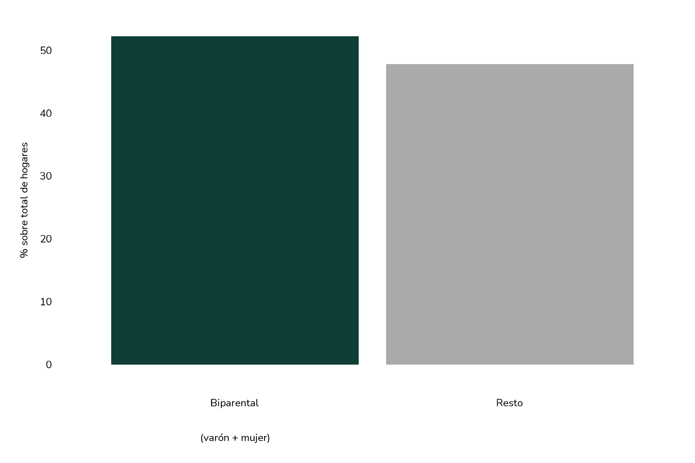
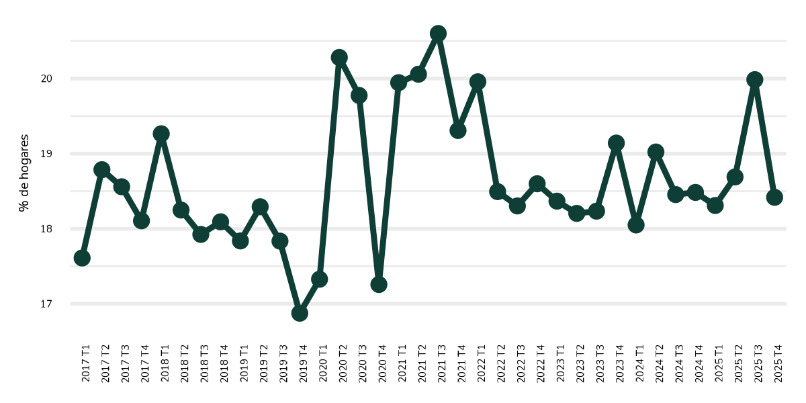
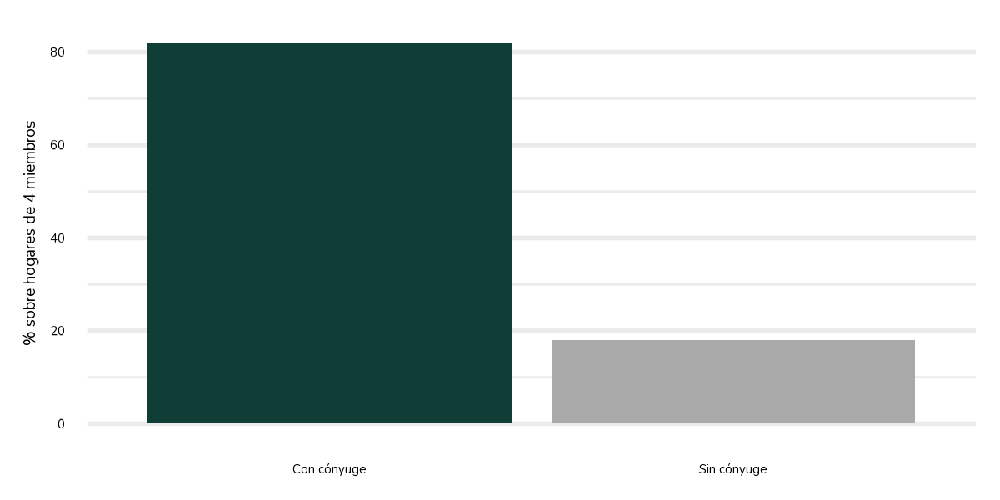
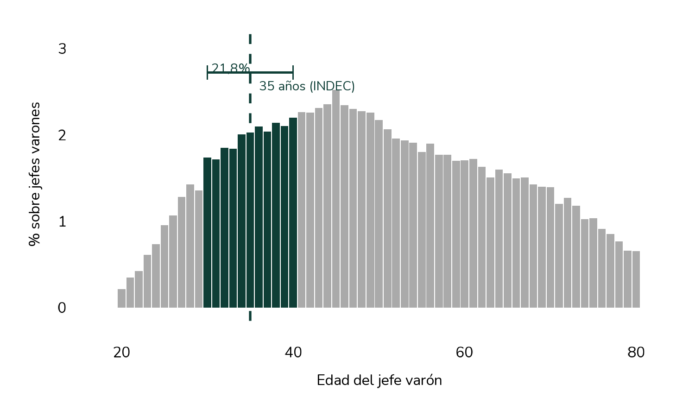
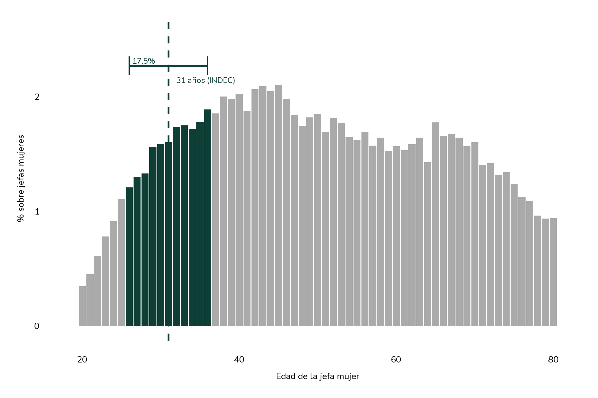
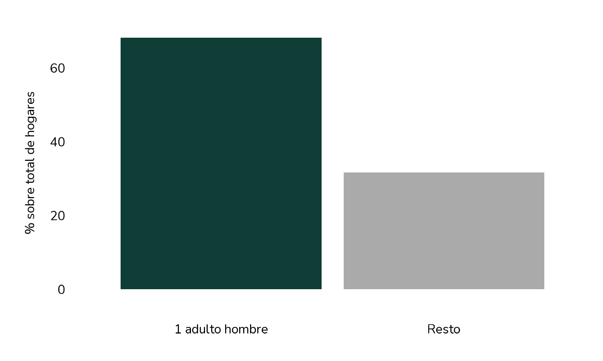
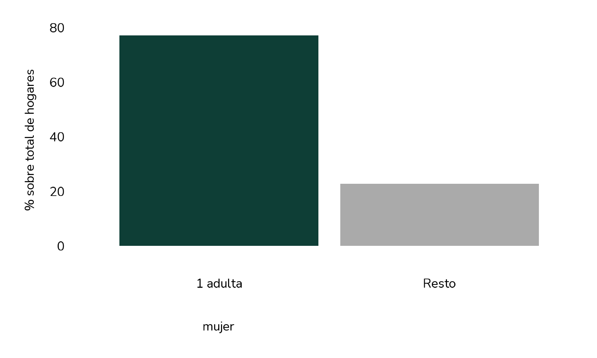

Estadística · Sociedad · Consumo · Pobreza
¿Cuán representativa es la
familia tipo del INDEC?
Julio 2026
La caída de la tasa de natalidad es uno de los fenómenos demográficos más comentados de los últimos años en Argentina —y en buena parte del mundo—. Menos nacimientos significa, entre otras cosas, hogares más chicos, estructuras familiares distintas a las de generaciones anteriores y, como consecuencia, un cambio en cómo deberíamos pensar las mediciones de pobreza que parten de una "familia tipo" fija. ¿Sigue teniendo sentido hablar de un hogar de cuatro integrantes, con dos hijos en edad escolar, como la unidad de referencia?
La semana pasada había salido el dato de inflación de la Ciudad de Buenos Aires (CABA) y el periodista lo estaba comentando. En verdad, se escuchaba algo como lo siguiente:
"la inflación de la ciudad de Buenos Aires trepó al 2,6%. Como consecuencia (...) Transporte, comunicación y cuidado personal como mayores incrementos (...) Así, un hogar tipo, con dos adultos de 35 años de edad junto con dos hijos de 9 y 6 años necesitó $ 1.500.000 para no ser considerado pobre y $ 800.000 a su vez para no ser considerado indigente" (cifras aproximadas).
Ese hogar que aparece de manera recurrente en informes oficiales, titulares periodísticos y debates televisivos, ¿existe realmente en la Argentina actual? Y si no existe —lo cierto es que estas construcciones estadísticas intentan aproximarse a la realidad—, ¿cuántos hogares argentinos se parecen a esa descripción? En otras palabras, ¿cuán "tipo" es verdaderamente una familia tipo? Si bien la pregunta nace debido al espacio geográfico de CABA, decidimos llevar este razonamiento a nivel nacional. Por tal motivo, adjunto a continuación cómo se componen los hogares tipo a nivel nacional al momento de construir canastas de consumo y, en consecuencia, determinar cuánto necesita un hogar para ser considerado pobre o indigente.
Figura 1. Canasta Básica Total (CBT) y Alimentaria (CBA) de tres hogares tipo a nivel nacional para precios de mayo de 2026

Fuente: INDEC (junio de 2026).
De acuerdo con la última estimación de las canastas, el hogar de tres integrantes debió tener un ingreso de $ 1.498.741 para no ser considerado "hogar pobre", y de $ 681.246 para no ser considerado "hogar indigente". Dejando de lado el análisis de ingresos para otra ocasión, en este caso interesa saber cuán probable —a partir de participaciones del período de análisis— es encontrar un hogar cuyos integrantes sean un hombre de 35 años, una mujer de 31 años, un hijo de 6 años y una hija de 8 años —independientemente de los parentescos—. Asimismo, del análisis es posible inferir los otros dos casos.
Cómo leer los resultados
Los resultados se desprenden de analizar la Encuesta Permanente de Hogares (EPH). La encuesta se realiza de manera trimestral en distintos aglomerados urbanos a lo largo del país (32 para ser exactos), cubriendo en promedio alrededor de 9,6 millones de hogares urbanos por trimestre. Cabe destacar que la EPH no releva hogares rurales ni localidades pequeñas; sus resultados son representativos de la población urbana de Argentina, que concentra aproximadamente el 90% de la población total del país. A lo largo del período analizado —del trimestre I de 2017 al trimestre IV de 2025, es decir, 36 trimestres— se relevaron en total 610.581 hogares en muestra, con un promedio de aproximadamente 16.961 hogares por trimestre. Las cifras que se observan a continuación son promedios del período, salvo mención contraria. A pesar de ello, se constató que los mismos son representativos de todo el período, es decir, son cifras estables. Una advertencia metodológica adicional resulta pertinente. La EPH fue concebida para realizar inferencias sobre grandes grupos poblacionales y no para identificar hogares que cumplan simultáneamente una larga lista de características muy específicas. En consecuencia, a medida que se incorporan nuevas condiciones —como sexo, edad de los adultos, cantidad de hijos y edad de estos últimos— la proporción de hogares que satisface todos los criterios disminuye rápidamente. Por ello, el objetivo del presente ejercicio no es estimar cuántos hogares reproducen exactamente la composición de la familia tipo utilizada por el INDEC, sino analizar cuán frecuentes son, por separado, los distintos atributos que la caracterizan y evaluar hasta qué punto estos reflejan la estructura demográfica observada en los hogares urbanos argentinos.
En búsqueda del hogar tipo
¿Cuántos hogares tienen dos adultos de distinto sexo?
Una de las características centrales de la familia tipo es que el hogar lo integran un hombre y una mujer, ambos adultos. Definimos como "adulto" a cualquier miembro del hogar que no sea hijo o hijastro del jefe, independientemente de su edad. Bajo este criterio, el 52,2% de los hogares urbanos argentinos cuenta con exactamente un hombre y una mujer, ambos adultos. Esto significa que casi la mitad de los hogares sobre los que versan las canastas quedan fuera de la caracterización desde el primer paso.
Figura 2. Hogares con dos adultos de distinto sexo vs. resto, promedio 2017-2025

Fuente: elaboración propia en base a EPH-INDEC.
¿Cuántos hijos tienen estos hogares?
Ahora bien, sin importar la cantidad de adultos que haya en el hogar, la distribución de hijos es la siguiente: el 40,3% de los hogares no tiene hijos, el 23,5% tiene uno, el 21,8% tiene dos, el 9,4% tiene tres y el 5,1% tiene cuatro o más. Como se ha dicho, la familia tipo supone exactamente dos hijos, lo que equivale a poco más de uno de cada cinco hogares del total.
Figura 3. Distribución de hogares según cantidad de hijos, promedio 2017-2025

Fuente: elaboración propia en base a EPH-INDEC.
¿Qué edad tienen los hijos?
En el caso de las edades, se ha relajado la especificación para contemplar un entorno sobre los valores que sugiere el INDEC. En este sentido, sobre el total de hijos en hogares biparentales, la distribución de edades en entorno de entre 3 y 7 años para uno de los hijos, y entre 7 y 11 años para la hija, capturan una porción acotada de la distribución real. La gran mayoría de los hijos se distribuye de manera bastante uniforme entre 0 y 20 años, sin una concentración marcada en ningún rango particular.
Figura 4. Distribución de edad de los hijos en hogares biparentales, promedio 2017-2025

Nota: Se limitó la muestra a hijos menores a 30 años para evitar distorsiones ocasionadas por hogares en los que se encuentran hijos mayores.
Fuente: elaboración propia en base a EPH-INDEC.
¿Qué edad tienen los jefes de hogar?
La familia tipo asume que el jefe varón tiene 35 años y la jefa mujer 31 años. Sin embargo, los datos de la EPH muestran que solo el 21,8% de los jefes varones se encuentra en el rango de 30 a 40 años, y apenas el 17,5% de las jefas mujeres tiene entre 26 y 36 años. Dicho de otro modo, menos de uno de cada cuatro jefes varones y menos de uno de cada cinco jefas mujeres caen en el rango etario que presuponen las canastas oficiales.
Figura 5. Distribución de edad del jefe varón, promedio 2017-2025

Fuente: elaboración propia en base a EPH-INDEC.
Figura 6. Distribución de edad de la jefa mujer, promedio 2017-2025

Fuente: elaboración propia en base a EPH-INDEC.
¿Cuántos hogares tienen exactamente un adulto varón o una adulta mujer?
Vale la pena observar estas dimensiones de manera individual. El 68,3% de los hogares tiene exactamente un adulto hombre, mientras que el 77,3% tiene exactamente una adulta mujer. Estas cifras, tomadas por separado, podrían sugerir que la familia tipo es frecuente. Sin embargo, la coincidencia simultánea de ambas condiciones —junto con la cantidad y edades de los hijos— es lo que reduce drásticamente la representatividad, tal como se vio en preguntas previas.
Figura 7. Hogares con exactamente un adulto (A) y una mujer (B) promedio 2017-2025


Fuente: elaboración propia en base a EPH-INDEC.
Entre los hogares de cuatro integrantes, la gran mayoría incluye una pareja: el 82% tiene cónyuge presente. La distribución etaria de los progenitores muestra que, en hogares biparentales, el 31,7% de los progenitores tiene menos de 35 años —el umbral que usa el INDEC para el varón de referencia—. En hogares monoparentales del mismo tamaño, esa proporción cae al 21,1%.
Hacia nuevas canastas de consumo
La familia tipo cumple una función estadística concreta: constituye una unidad de referencia que permite seguir la evolución del costo de vida y comunicar de manera sencilla los umbrales de pobreza e indigencia. En ese sentido, su utilidad no depende necesariamente de que represente al hogar más frecuente del país. Sin embargo, la pregunta sobre cuán cercana se encuentra esa referencia de la realidad cotidiana de los hogares argentinos sigue siendo relevante. Los resultados sugieren que varias de las características que definen a la familia tipo poseen una presencia limitada cuando se las compara con la composición actual de los hogares urbanos. Si bien cada atributo por separado puede resultar relativamente frecuente, la evidencia apunta a que la configuración utilizada como referencia oficial no coincide necesariamente con las estructuras familiares más habituales en la actualidad. Esta distancia entre la referencia estadística y la estructura demográfica efectiva de los hogares adquiere especial relevancia en un contexto de cambios demográficos sostenidos. El aumento de los hogares unipersonales, la menor cantidad de hijos por hogar y el envejecimiento de la población han modificado la composición familiar respecto de aquella que inspiró originalmente la noción de familia tipo. Lo anterior no implica que las canastas actuales deban abandonarse. Por el contrario, su continuidad favorece la comparabilidad histórica de los indicadores. No obstante, los resultados sugieren que podría ser útil complementar las mediciones tradicionales con un conjunto más amplio de hogares de referencia. Incorporar canastas para hogares unipersonales, parejas sin hijos, hogares monoparentales o familias con un único hijo permitiría describir de manera más precisa la diversidad de situaciones que caracterizan hoy a la sociedad argentina.
¿Qué concluyo de todo esto? No creo que la familia tipo sea un invento malicioso ni una negligencia estadística. Tiene una lógica: sirve para comparar el poder adquisitivo a lo largo del tiempo con un patrón fijo. El problema no es el dato en sí; el problema es cómo lo usamos. Cuando un sindicato dice que "una familia tipo necesita tantos pesos para vivir", está usando una abstracción demográfica como si fuera la experiencia vivida de la mayoría. Y no lo es. La mayoría de los hogares argentinos son más pequeños, más heterogéneos, más solos de lo que ese modelo sugiere. No digo que el INDEC deba publicar cuarenta canastas distintas. Digo que cuando periodistas, políticos y analistas citan "la familia tipo" deberían aclarar que están hablando de un artefacto metodológico que describe a una porción acotada de los hogares argentinos. No porque sea un dato falso, sino porque la distancia entre el modelo y la realidad es parte de la información. En definitiva, estos resultados también son un síntoma más de cómo viene cambiando la composición de los hogares argentinos, en línea con la caída sostenida de la natalidad. La familia tipo continúa siendo una herramienta útil para el análisis económico y social, pero su valor radica más en su función como referencia estadística que en su capacidad para representar al hogar argentino contemporáneo. En una sociedad cada vez más diversa en términos de arreglos familiares y ciclos de vida, complementar esa referencia con nuevas canastas permitiría enriquecer el diagnóstico social sin resignar la comparabilidad histórica de los indicadores.